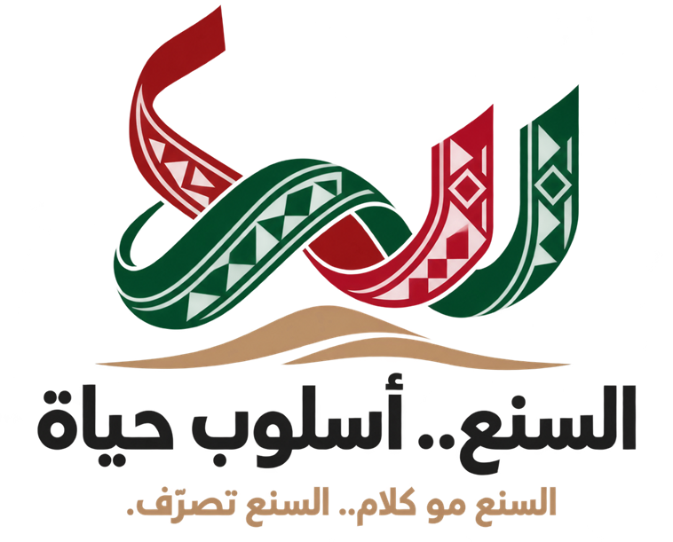
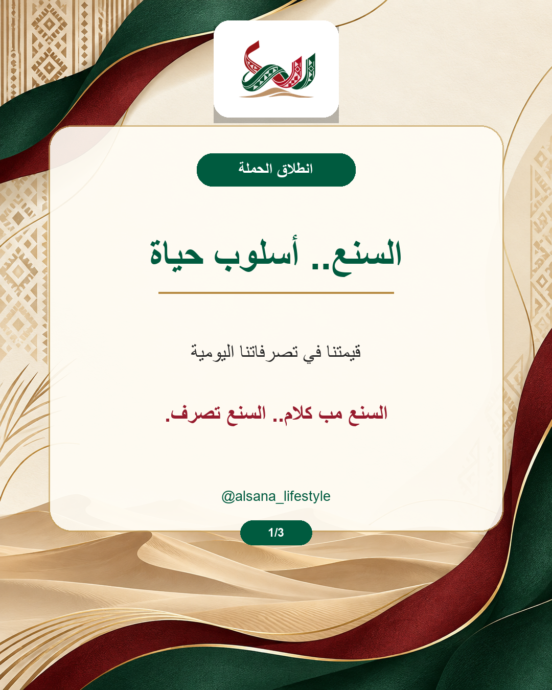
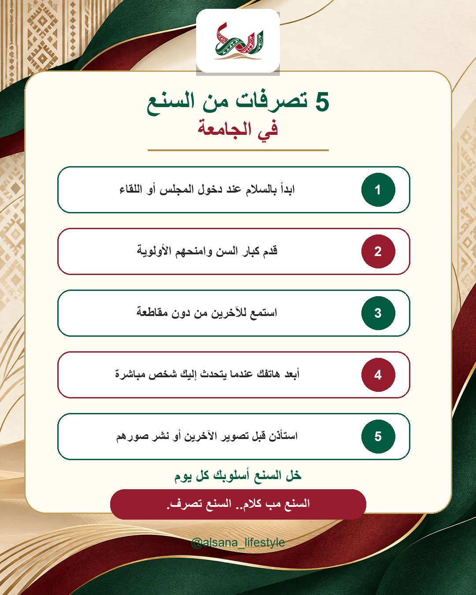
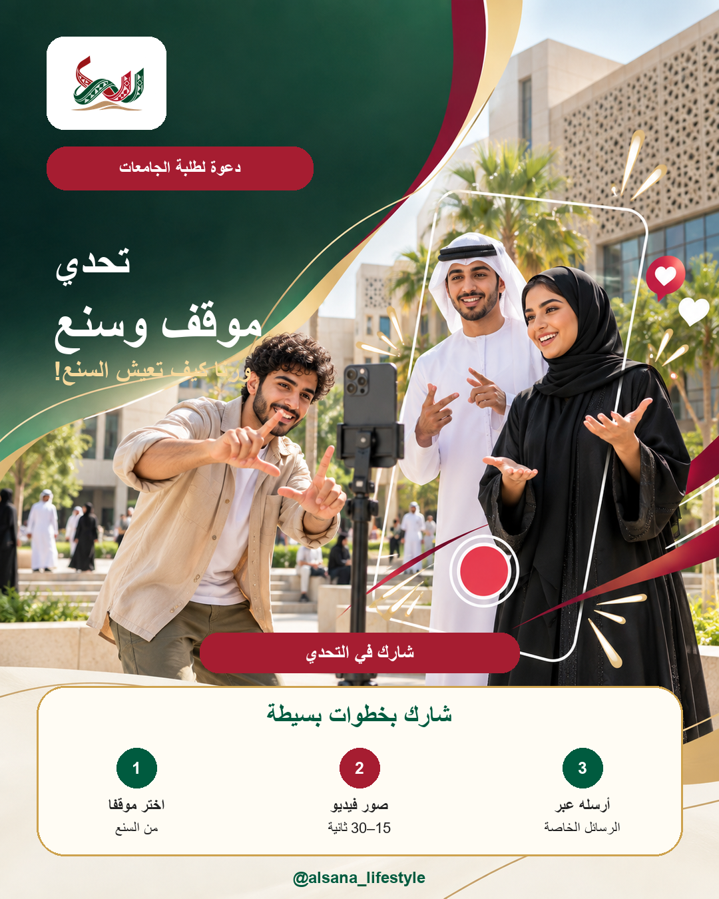

المجلس
السلام، تقديم الكبير، والإنصات باهتمام.

السنعأسلوب حياةحملة توعوية طلابية
اختبر قراراتك في مواقف من الجامعة والمجلس والفضاء الرقمي، واكتشف كيف يصبح السنع الإماراتي أسلوب حياة نعيشه كل يوم.
ابدأ الاختبارالأداة التفاعلية
اختر التصرف الأقرب إلى السنع في كل موقف. ستظهر نتيجتك والتفسير بعد إكمال الأسئلة.
عن الحملة
تعيد حملة «السنع.. أسلوب حياة» تقديم السنع الإماراتي بوصفه سلوكًا حاضرًا في تفاصيل الحياة الحديثة، وليس تراثًا مرتبطًا بالماضي فقط.
تخاطب الحملة الشباب الإماراتي وطلبة الجامعات من خلال مواقف واقعية، ومحتوى رقمي، وقصص كبار السن، واختبارات وتحديات تفاعلية.
السلام، تقديم الكبير، والإنصات باهتمام.
المساعدة، المبادرة، وحسن التعامل.
اللغة المحترمة والاستئذان قبل التصوير والنشر.
السنع اليوم
عند دخول المجلس أو اللقاء.
وامنحهم الأولوية في الجلوس والحديث.
من دون مقاطعة أو انشغال بالهاتف.
عندما تلاحظ حاجة الآخرين إليها.
واستأذن قبل التصوير أو النشر.
مواد الحملة
نماذج من المحتوى الذي تنشره الحملة عبر إنستغرام.



سوالف السنع
خبرة الكبار تحفظ معنى السنع وتنقله إلى الأجيال الجديدة: احترام الناس، وإكرام الضيف، وحسن التصرف في كل موقف.
«السنع قيمة موجودة في كل زمان؛ تتطور طريقة تطبيقها ويبقى جوهرها الاحترام وحسن التصرف.»شاهدوا سوالف السنع على إنستغرام
شارك معنا
اختَر موقفًا يعبر عن السنع، وصوّر فيديو من 15 إلى 30 ثانية، ثم أرسله إلى حساب الحملة عبر الرسائل الخاصة.